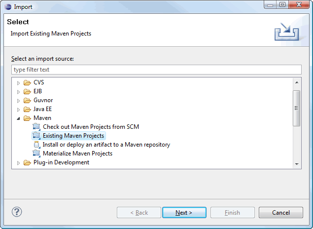

Eclipse and JBoss Tools
Denne tutorialen er ikke helt ferdig. Må beskrive stegene som er nødvendige for å benytte JBoss Tools. Screenshots må endres siden jeg har fjernet JAR pom'en. Vise steps for å opprette en entitetklasse med autogenerert CRUD UI-grensesnitt. Vise steps for reverse engeneering med autogenerert UI.
This tutorial explains how to use the Eclipse IDE and JBoss Tools for development.
Shortcuts
The shortcuts are listed here so we don't have to type the tedious file paths over and over again in this document.
${JBOSS_HOME}- refers to Jboss installation folder, e.g. C:\servers\jboss-4.2.3.GA${JBOSS_CONFIG}- refers to the configuration directory e.g. C:\servers\jboss-4.2.3.GA\default${JBOSS_DEPLOY}- refers to the JBoss deploy folder, e.g. C:\servers\jboss-4.2.3.GA\default\deploy${PROJECT}- the project root folder, i.e. seam-maven-refimpl${SEAM_REFIMPL}- the folder where the reference project, i.e. seam-refimpl, is installed on your computer${SEAM_TUTORIAL}- the folder where the tutorial project, i.e. seam-tutorial, is installed on your computer
Download and install software:
- Eclipse Ganymede 3.4 (with WTP installed)
- Maven 2.0.9 or later.
Note: Do not use Maven 2.1.0, it has a serious bug, see the${PROJECT}/doc/maven-2.1.0-bugfolder for an explanation.
A Maven-2.2.0 release candidate can be found here. - Eclipse Maven plugin
- SubClipse-1.6.x, Team Provider plug-in providing support for Subversion within the Eclipse IDE
- JBoss Tools 3
- Jboss 4.2.3.GA Application Server
Use the seam-refimpl Project as a Template for Your Own Project
To import a mavenized project to Eclipse (i.e. a project that is already installed on your computer), follow these steps:
- Follow steps here to set up the project.
- Switch to developmentmode
- Install Eclipse Maven plugin if you haven't done so yet.
- Copy
${SEAM_TUTORIAL}/config/profiles/profiles.xmlto${SEAM_TUTORIAL} - Create a workspace folder, e.g. C:/seam-workspace
Note: Do not use your project folder, ${SEAM_TUTORIAL}, as a workspace folder. - Open profiles.xml and point the
env.eclipse.workspaceproperty to the newly created folder,
e.g.<env.eclipse.workspace>C:/seam-workspace</env.eclipse.workspace> - Navigate to the ${SEAM_TUTORIAL} folder using a command shell and execute maven commands:
mvn clean install
mvn eclipse:configure-workspace
mvn eclipse:m2eclipse
The last Maven command will generate the Eclipse.projectand.classpathfiles that now makes the project a valid Eclipse project.
Note: Do not use theeclipse:eclipsecommand, it does not work properly when m2eclipse is installed. - Open Eclipse and select to the newly created workspace folder.

-
Configure Eclipse to use an external Maven installation.

-
Import project:



-
Modify Run Configurations:
According to this blog there is a problem with runningmvn installfrom eclipse. Read the blog and follow screenshots here to fix the problem.

 Run the
Run the clean install -PexplodeRun Configurations to deploy the project to the server the first time. Inprofiles.xml: remember to point the server to the correct deploy folder. - Install JBoss Tools if you haven't done so already.
- Create a WTP server reference (that references the installed JBoss application server), the JBoss Seam documentation explains how to Create a WTP server reference